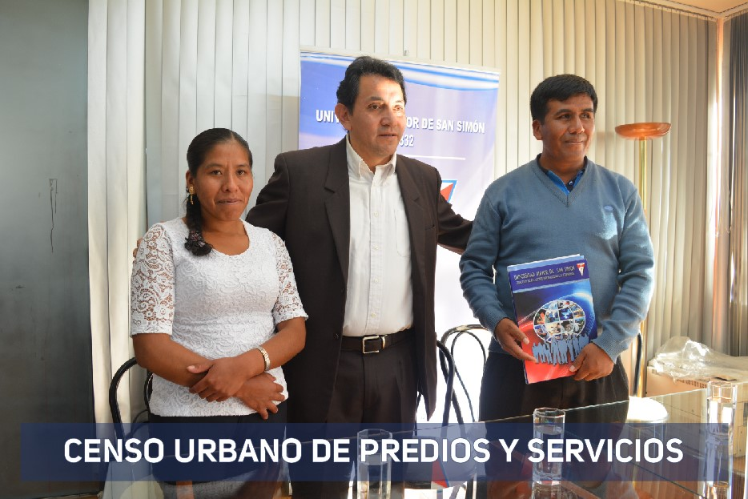

SERVICIOS



El proyecto contemplará el desarrollo de un Sistema de Información Catastral Multifinalitario, donde los datos deberán abarcar un amplio espectro de información urbana territorial, económica, legal, fiscal y jurídica para poder llegar a decisiones adecuadas de planeamiento, inversión, implantación, operación y administración del catastro y otros temas vinculados al desarrollo urbano.